Lista de Quests Principais que contam a historia do Jogador
Awakening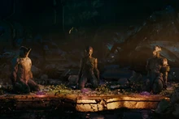Vor's PrizeSaya's VigilOnce Awake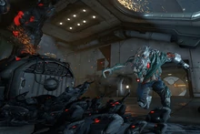Heart of DeimosThe Archwing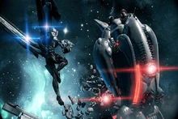NatahThe Second DreamRising Tide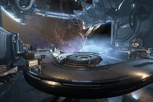The War withinChains of HarrowApostasy PrologueThe SacrificePrelude to War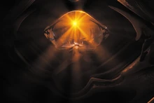The New WarAngels of the Zariman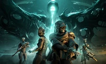Whisper in the walls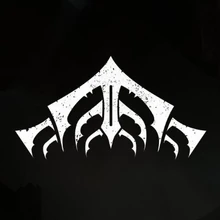
Lista das Quests secundárias às quais complementam a lore
A man of few WordsVox SolarisThe Waverider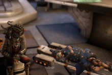The Deadlock protocolHowl of KubrowStolen Dreams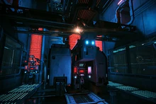The New strangeThe Limbo theoremOctavia's AnthemSand of InarosThe Silver grove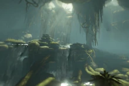Patient zeroThe Jordas precept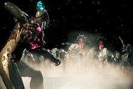Hidden messages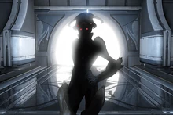The Glast gambit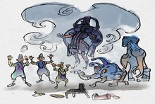Mask of the revenantCall of the tempestari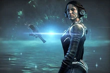VeilbreakerThe Duviri Paradox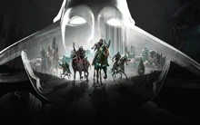